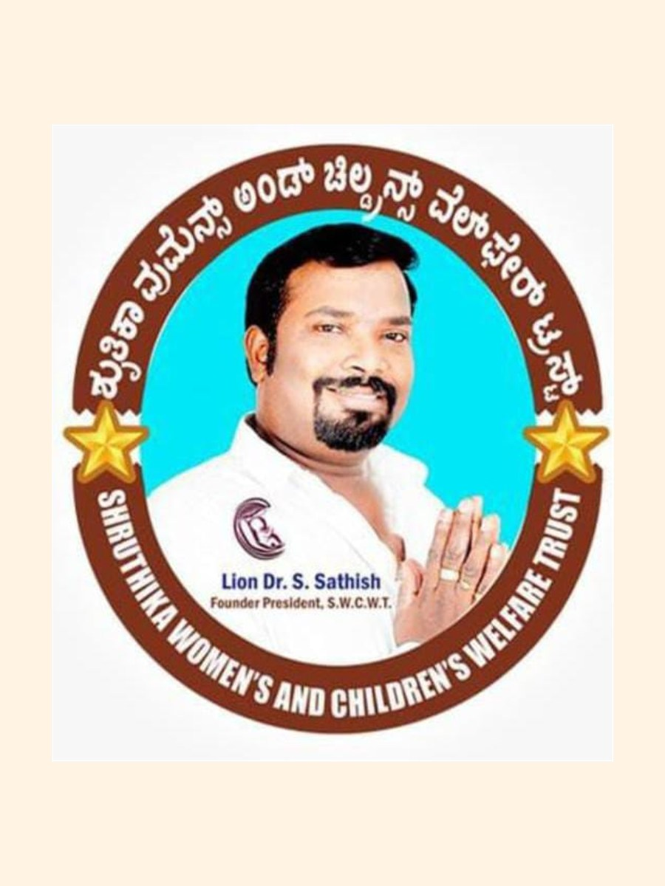
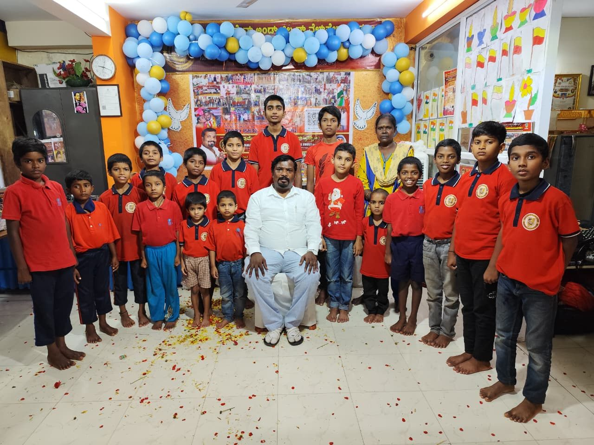

Our Mission
To provide food, shelter, education, and moral support to children, helping them find the path to a settled and respectful future.
The Shruthika Women's and Children's Welfare Trust is dedicated to uplifting the lives of abandoned orphans, underprivileged children, and women in need — with food, shelter, education and the moral support that helps them stand tall.

The Shruthika Women's and Children's Welfare Trust is dedicated to uplifting the lives of abandoned orphans, underprivileged children, and women in need.
The trust was founded by Lion Dr. S. Sathish, who was born to moderate parents in Bengaluru. Despite a professional background as a car driver, his student years were defined by a deep-seated inspiration to serve disabled and orphaned children. Before establishing this trust, he led the Karnataka Rakshana Yuva Pade (KRYP), working to protect Kannada culture and promote unity.
To provide food, shelter, education, and moral support to children, helping them find the path to a settled and respectful future.
To transform lives in accordance with cultural values, ethics, and human dignity, ensuring a worthier future for suburban and rural poor.

Placing trained women and youth into dignified, sustainable work — so families can stand on their own feet and children can stay in school.
Trained female & male staff
Round-the-clock home care
Compassionate child minders
Salon & grooming skills
Attendants & caregivers
Licensed, verified drivers
Trained security personnel
Tell us what you need
Though Dr. S. Sathish was running a Kannada outfit and a business unit, he was very eager to start a charitable trust to help the orphaned and single parent children, children with disability and adopt street children. He has visited many homes and hostel trusts, learned from orphaned children, and was inspired by the noble services rendered by them in promoting and nurturing the aggrieved people's life. This ignited a strong desire and motive in his mind to start a charitable trust for women and children and serve them fully.
Also to provide some specialized services in arranging community marriage services with the help of Lions Club, Bengaluru.

Lion Dr. S. Sathish started the “SHRUTHIKA WOMEN'S AND CHILDREN'S WELFARE TRUST (R.)” with the following objectives:
To help the abandoned orphans and single parent children with a zeal to improve their living skills through education and help them to attain self respect and self esteem.
To have access with orphans and underprivileged children and indulge in supporting them for their overall development and growth in their life.
To ensure a better future for such children and create a worthier future for the children of rural and sub-urban poor parents and earn their meal and continue their education till they get a respectful job to quench their hunger.
To provide specialized services in arranging community marriage services with the help of Lions Club, Bengaluru.
Every contribution goes towards food, shelter, education and moral support for children who have no one else to turn to. Partner with us — donate, volunteer, or sponsor a child's education.